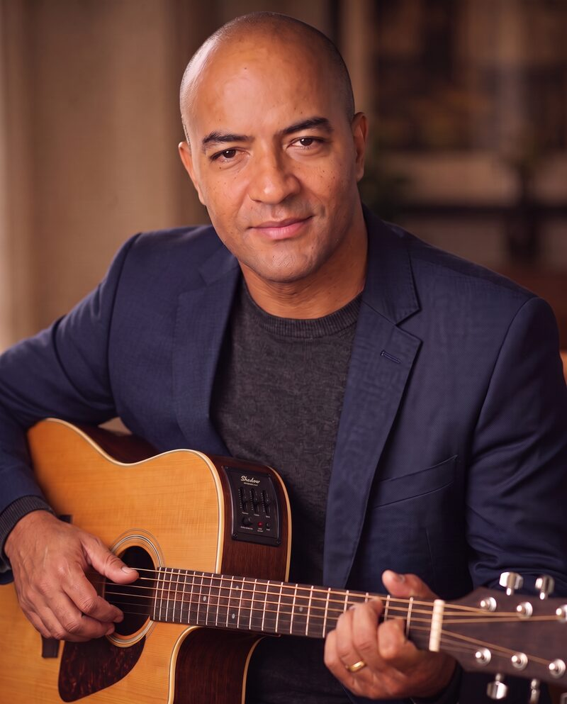

Cantor · Compositor · Violonista
Josimarth Dias
Projeto "A Mensagem": palavras de fé, esperança e transformação entre o Gospel e os ritmos brasileiros.

Sobre
Josimarth Dias é um cantor, compositor e violonista que dedica sua arte ao projeto "A Mensagem". Com uma musicalidade que transita entre o Gospel e ritmos brasileiros, Josimarth utiliza sua voz e as cordas do seu violão para levar palavras de fé, esperança e transformação aos seus ouvintes.
Atualmente baseado em Brasília, o artista vem consolidando sua carreira com composições autorais marcantes, como "A Mensagem", "Não Temerei" e "Tentando Te Encontrar", entre outras. Suas letras são reflexos de uma sensibilidade aguçada e um compromisso profundo em edificar vidas através do louvor.
Mais do que música, cada lançamento é um convite para uma experiência de conexão espiritual e paz. Explore sua discografia e deixe-se envolver pela mensagem.
Música
- A Mensagem Gospel Acústico
- Não Temerei Pop Rock
- Tentando Te Encontrar MPB
Agenda
Novas datas em breve. Siga nas redes sociais para saber primeiro.
Contato
Para shows, eventos e parcerias, fale comigo pelo WhatsApp ou pelas redes sociais.